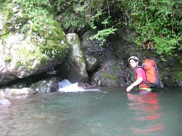
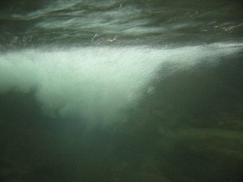
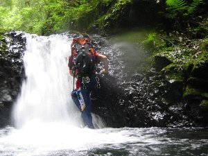
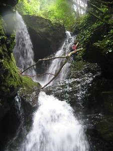
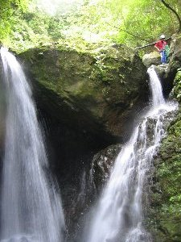

沢登り（シャワークライミング） | 2006年7月 企画（キッカー） |
|---|---|
| 夏だ！プールだ！沢登りだ! と、言うことで今年も行きました沢登り。 ここで、沢登りを知らない方に、ちょこっと説明しますと、沢登りとは字のごとく、川（沢）の中をジャバジャバと歩いて上流へ向かって行く、です。 途中に小さい滝が有れば、ヨイショッてよじ登り、大きい滝が有れば、横に逃げるか、チャレンジ精神で登るかの選択を迫られるアクティビティです。 子供時代を呼び覚ます、水遊びに似た感覚で、とっても爽快感あふれ、病み付きになること請け合いな、この遊び。 今回は皆の都合が合わず、私（べっしー）とキッカーの二人で決行となりました。 | |
|  スタートからいきなり腰まで水です。 |  小さい滝をヨイショッと。 |
| 7月最初の土曜日。まだ、梅雨が明けて無い為に、天気予報は降水確率７０％の雨予報。 が、朝から曇り一時晴れ間がのぞき、蒸し暑い日となりました。 久しぶりにやる私は、ワクワクとドキドキが入り混じりながら、車で目的地の安倍川−中平へ。 渓流足袋を履き、ハーネスとヘルメットを付け、着替えや靴を入れたザックを担いで出発しました。 そして、いきなり入水！ ちょっとした滝の所からスタートしました。 滝壺は以外に深く、腰まで浸かる深さ。 その中を半泳ぎで進み、滝の岩にしがみ付き登って行きます。 落差１ｍも無いくらいなので、軽くクリアー。 沢ですから山の谷間に有るわけで、当然、両側は山が迫っていて、薄暗い空と相まってちょっぴり暗いですが、深い緑に囲まれ、滝の水しぶきは白く、滝壺は碧くと、気持ちがスーと落ち着いて行く感じがします。 滝の水しぶきを、まさに体全体で浴びて、マイナスイオンを吸収しまくります。 この沢は、小さい滝が次々に現れるため、とても楽しめるコースです。 その度に、滝壺を泳いだり、頭から水をかぶるので、全身ビショビショになりますが、これが楽しくて仕方無いんです。 大人になってから、海やプール以外で、全身ずぶ濡れの水遊びをしたことがある人って、そんなにいないですよね。しかも、服を着たままで。 子供のときは平気だったのに、大人になると、服を汚したり濡らしたりする事を嫌がりますから。 | |
|  滝壺の下はこんな感じ |  レンズが水滴で分け分からん状態 でも、実際眼鏡掛けてるからこんな感じ |
| やってみると楽しいですよ。 滝を登る時なんか、まず、水がドドドッって流れてくる中に手を突っ込み、掴める岩を探します。そして頭を滝の中に突っ込みます。 顔面を水が叩きつける様に当り、それが全身にも及びます。前を向いても、迫り来る水しか見えず、滝の上で指示を出しているキッカーの声なんて、滝の音でかき消されて聞こえません。 それでも手を繰り出し、次の岩を掴み体を持ち上げて進みます。 たった、１〜２ｍ位しかない滝なのに、この瞬間が楽しいです。 さて、しばらく進むと、落差７ｍ（見た目それ以上有ると思えるのですが）の2段になっている滝が出現します。このコース一番の難所と言えるでしょう。 初めてこの沢に来た時は、回避ルートでパスしました。 それ位の壮大な滝です。 見る分には良いけど、今からこれを登るのかと思うと、水しぶきではない寒気がします。 《注意》登れない人、怖い人は、ちゃんと回避ルートが有ります。無理だと思ったらチャレンジしないで下さい。安全を確保出来る状態なら、お勧めしますが。 キッカーは当然のごとく 「ロープ出すから」と言い、ロープの端を持ち、どんどん登っていきます。 | |
 この滝もクリアー（上にいるのキッカー） |  結構勢いの良い水流です |
| ロープ出すって事は、俺にもついて来いって事で、回避ルート行きます。なんて言えないな。と、考えながら、心臓の鼓動は高まっていきます。 初めてやる人が「これ登りてー」って言える人は、一部を除き居ません。通常は怖いと感じます。 感じない人はクライマーです。^_^; キッカーが上からロープを垂らすので、その端を自分のハーネスにくくり付けます。これで、上から引っ張られる具合になるので、途中で滑って落ちても、ロープで宙ぶらりんになるだけですから安全です。 それは分かっていても、いざ岩に取り付くと、滑る岩と大量の水しぶきで、恐怖は有ります。 途中で引き返したくても、上からロープで引っ張られている為に、下がるわけにもいかず、水音で声は届かずなので、進むしか有りません。 それでも、何とか掴む岩を探し当て、上へ上へと登っていくと、アドレナリンが出っ放しの脳に「楽しいかも」て単語が横切り始め、滝の裏側なんか見えちゃうと、うれしくなっちゃって、最後の方は、ちょっと緩やかな斜面になってくるので、気持ちにも余裕が出てきます。 なんとか難所の滝をクリアーすると、達成感で満ち溢れます。 もう、やったーって感じです。 | |
|  メインイベント二段滝 右上にキッカーが居るの分かるかな？ |  左写真の上部アップ キッカー登りました |
| そんなこんなで、楽しい沢登りを終えて、家に帰り、しばらくくつろいで居たら、ズボンの左足もも部分が血だらけなのに気が付いて、ビックリして見ると、血は止まってはいるが、カサブタ状の血溜まりが・・・・どうも、ヒルにやられたらしい。 ヒルは痛くも痒くもないので、食われたかどうか分からないんだよね。まあ、いいか。 総括 やっぱ、沢登り（シャワークライミング）は楽しい♪ 夏のアクティビティとして最高です。 滝を登るのに経験者が必要なので、一緒に行ってくれる人が居る時は、是非参加したいですね。 皆さんも決して一人では行かないで下さい。 しかし、やれば楽しいこと間違い無しですから。 | |
| 写真＆コメント ｂｙ べっしー | |